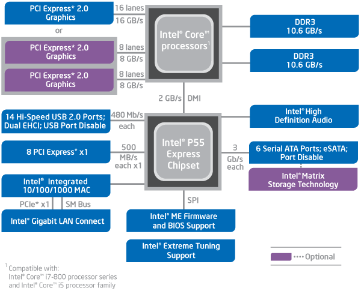

Maybe it isn’t LCD…
I think my current monitor has that problem. If you view it form an angle all the colors are off and everything appears darker than it really is… Maybe it isn’t LCD?
facepalm Wow I can be such a moron sometimes.

Maybe it isn’t LCD…
I think my current monitor has that problem. If you view it form an angle all the colors are off and everything appears darker than it really is… Maybe it isn’t LCD?
facepalm Wow I can be such a moron sometimes.
I might suggest a couple things.
For the mobo, if you aren’t an expert overclocker, but wouldn’t mind an extra bit of boost in performance, the MSI P55GD65 often sells for less than the Evo you mentioned earlier. It still has dual PCI express slots ( naturally if you use two they will be split to both x8 because of the restrictions of the P55 chipset, but that theoretical limit isn’t going to bother you if you are looking at dual 5770s ).
A big benefit of the GD65 is the OC Genie. Since it sounds like you aren’t comfortable with overclocking I suggest this as an interesting option. You don’t DO anything. Just press a button on the motherboard, and it overclocks itself. If you are looking at the i5 750 with a stock cooler, I’ve seen results range from 3.2 - 3.4GHz depending on the memory used. Asus, and gigabyte both have something similar, but neither are as seamless, and their options are both OS based.
Speaking of Ram 300 bucks is probably more than you need to spend.
Two of these:
https://www.ncixus.com/products/42744/F3-10666CL7D-4GBRH/G.Skill/
Will end up saving you 50 bucks, and you won’t notice performance difference. That kit has nice tighter timings, and anything above the DDR3-1333 starts dropping off fast in performance/dollar numbers.
I’m also not a big fan of the cosmos. For such a high priced case, I’ve tested a couple, and their air flow capabilities are surprisingly poor. I expected the noise dampening to make up for it, but it didn’t seem to perform all that well in that respect either when compared against an antec full tower comparison I tested.
Also I think the LCD colour problem at an angle is what is known as ‘colour shift’. This is one of the two biggest drawbacks of TN panels. They have good contrast ratio, and response times, but their colour reproduction and colour shift are poor. This is even worse on cheaper TN panels.
That’s it. It’s not really a problem when you are sitting in front of the computer, but something like a ring stand if the monitor has too much of this issue it doesn’t seem like it would be very good to have a limitation on the monitor tilt.
For a tower, something like this?: https://www.infotechnow.com/product_info.php?products_id=5729&s=froogle
Edit: Also, I’m not going to CrossX the 5770’s after all. Somebody earlier pointed out that a single 5850 would be cheaper and gets the same and sometimes better results. So instead of the 5770 I would either get a single or (possibly) a CrossX of that.
But they will use much more energy then necessary when they at less than 25% of load.
What am I buying that a I’m using less than 25% of the load on a 1000w PSU?
With what you are using your load wattage is going to be <300W drawn from the wall, you might breach the 300W mark with multiple hard drives, and a lot of fans, but the new fab process in the AMD GPUs are very efficient. I have tested this on about 7 systems now ranging from the i5 750, to the i7 940.
The antec 1200 is a decent, if a little loud, case. It has excellent air flow, but no real noise dampening. Setting the fans to low is still better than most cases air flow, and still reasonably quiet. When set to high the fans are…quite noticeable, but airflow is significant.
An interesting thing about the antec 1200 is you can buy a proprietary PSU for it that is designed for the case. The Antec CP-850 CP Series 850W is an amazing modular PSU ( which is actually using the components of the Antec signature series PSUs ) . Simple remove the bracket and you have a nice PSU that usually sells for reasonably cheap. The drawback is that it is basically tied to the case, it’s design won’t fit in most any other case.
Correct me if I’m wrong max, but not all P55 mobos will split into x8x8. Cheaper ones will split into x4 slots, which will hurt performance significantly as compared to x8.
Don’t you leave your computer on 24/7? You don’t expect it to be using 250W on idle, do you? In practice, your computer will only spend the maximum wattage is when you are using everything to its full potencial, e.g., when you are gaming. On other times it will spend much less than that (try, e.g., changing the load of your computer from 90% to 50% or 25% in that link I gave).
You don’t need to worry to much with this, it just isn’t recommended to buy a PSU with a too much higher wattage then you need, otherwise you will waste your money… twice. While the efficiency at 25% to 90% of load is more than 80% on a good PSU, you can’t expect that below 25%.
EDIT: there are exceptions to this rule, Huntkey Balance King is said to spend 1 W on idle.
Well sort of. No patter what when you have a second card occupying a PCI express slot the primary will switch from x16 to x8. On some cheaper board there will be a mini PCI x4 slot, like the MSI P55 CD53. Those mini PCIexpress slots are mainly designed for sound cards and other small peripherals. If you have a large card like a 5970, this single slot being brought down to x8 so that you can use the second pathways is a bit of a limitation.
Here is the diagram of the P55 design:

It’s possible that board makers might have tweaked things on lower end boards, but it’s not a chipset limitation, and I can’t think of an example off the top of my head. But yeah it’s possible that a budget board might put a restriction like that, for some reason.
Oh ya, forgot about idle. True, in a hibernation mode I suppose the energy usage would drop drastically to a very small number.
True, but it doesn’t look like it has some of those useful “quick fix” features such as MemOK! that the other board has. I’m not saying I’ll necessarily need those or rely on them, but it’s reassuring to know things like that are on the board. Also, looking around with Google it looks like the ASUS can be bought for cheaper.
Edit: Another case I found: https://www.newegg.com/Product/Product.aspx?Item=N82E16811517006 (Might buy the blue version, though)
and monitor: https://www.newegg.com/Product/Product.aspx?Item=N82E16824191011
Another question as well: If I have two Hard-Drives can I have 2 OS’s installed? Not really planning on it, just a curiosity thing again.
Ok, yeah, that’s what I mean. Most boards that I’ve seen below about $150 have an x16 slot and then one or two x4 slots, so obviously those x4 slots wouldn’t somehow become x8 slots even though the x16 slot becomes an x8 slot. The articles I’ve seen say that running two 5870s in CF on P55 costs you about 4% performance compared to X58, assuming you have two 16 lane slots and not the 4 lane slots.
Unless I’m mistaken, hibernation technically powers the computer down altogether after storing session information on the hard drive. Sleep mode, on the other hand, stores the information in RAM. This is why you can put your computer into hibernation, unplug it from the wall, plug it back in and still continue where you left off, whereas unplugging your computer after putting it to sleep will make you loose any unsaved session data.
Yes.
You can have 2+ operating systems on one harddrive, you just need to partition it properly. I think they have to be on one hdd, the bootloader only loads from the primary hdd.
You can also have 2 OS’s installed on the same Hard Drive, in case you didn’t know. Which you probably did, but still.
@Shrike
FFFFFFFFFFFFFUUUUUUUUUUUUUUUUUUUUUUUUUUUUUUUUUUUUUUUUUUUUCCCCCCCCCCCCCKKKK YOU.
:3
Oh, well then, nevermind. I don’t keep my computer on 24/7 after all. I’ll let it go into sleep mode if I just step away, but over-night or if I plan on being away for a good while I’ll always hibernate it. Since I didn’t trust my computer I never trusted turning it off. Once I got it working I figured KEEP IT WORKING. Probably poor logic, but whatever.
Ok, back to the two OS’s thing. Will having an x64 computer cause much compatibility issues? I occasionally like to purchase “retro” games such as THIEF and System Shock 2 and wasn’t sure if they would still run on an x64 computer.
It shouldn’t. 32 bit apps run in a 32 bit compatibility layer. Worst case scenario, use DOSbox for the oldest games.
I see no reason why Thief and SS2 wouldn’t work on Windows 7 64-bit. All of my games have no problems running.
This is getting ridiculous, Shrike.
I can has ninja usertitle?
Ah, ok. Good, then I don’t have to worry about keeping Vista x32. (Good Riddance)
Founded in 2004, Leakfree.org became one of the first online communities dedicated to Valve’s Source engine development. It is more famously known for the formation of Black Mesa: Source under the 'Leakfree Modification Team' handle in September 2004.